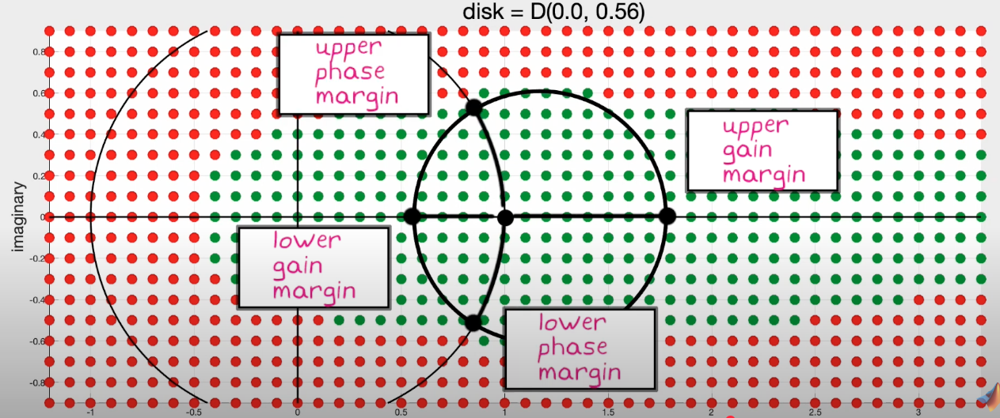
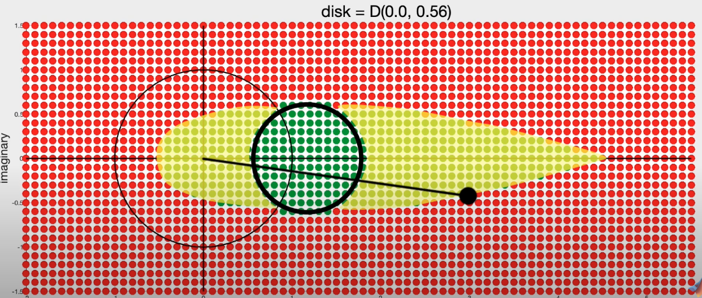
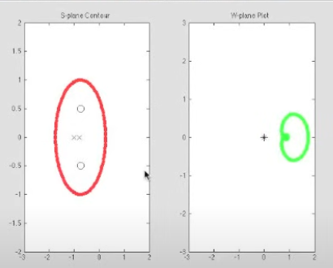
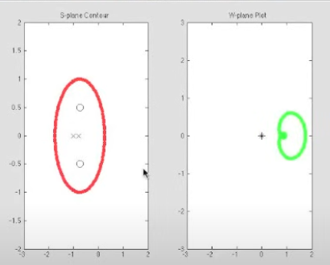

Stability Analysis
Stability Margins - Gain and Phase Margins
In simple terms, Gain and Phase margins are the safe net and the extra that protects us from instability.
less margin = less stable
Note:
Gain crossover frequency is used to caluclate Phase Margin.
Phase crossover frequency is used to caculate Gain Margin.
The Gain and PhaseMargins are defined with respect to open-loop transfer function, but the margins are not intrinsic properties of the open-loop system alone, and are only meaningful for the corresponding closed-loop system.
Gain Margin
The gain margin (GM) is defined at the phase crossover frequency
\(\omega_{pc} \text{ where } \angle L(j\omega_{pc}) = -180^\circ\):
\[GM = \frac{1}{|L(j\omega_{pc})|}\]
In decibels (dB):
\[GM_{\text{dB}} = -20 \log_{10} |L(j\omega_{pc})|\]
If there are multiple Phase crossover frequencies \(\omega_{pc}\), use the most conservative Gain Margin.
Phase Margin
The phase margin (PM) is defined at the gain crossover frequency
\(\omega_{gc}\) where \(|L(j\omega_{gc})| = 1\):
\[PM = 180^\circ + \angle L(j\omega_{gc})\]
Margins and Sensitivity
Peaks in Sensitivity Plots are directly correlated with Gain and Phase Margins. The smaller the margins, the bigger the peak.
Why use Disk Margin?
-
Even though increasing delay or increasing gain individually (reducing GM and PM respectively) may not cause the system to be unstable, adding a mix of the two can unstabilize the system. The disk margin therefore needs to be considered. To anaylze the effect of adding phase and gain, use Nyquist Plot.
-
Disk margin can be used on MIMO.
Disk Margin

The disk reads “Given \(e=0.0\), the maximum disk margin is 0.56”
Parameters of the disk
The disk must be fit entirely in the stable region and includes the nominal point \(f =1 + 0i\)
- Skew factor \(e\). how far off the center of the disk is to the nominal point.
- \(\alpha\) measures the size of the disk. It represents the size of the disk given a certain \(e\) such that the disk is entirely in the stable region.
Disk Placement
You can choose where the disk is:
-
If you think real system gain is bigger than model gain, use a bigger \(e\)
- If unsure, choose \(e = 0.0\)
-
Disk margin may not be conservative even if it may only covers a small area of stability zone.

- in this case, while gain margin is bigger, at those bigger gain values, not much wiggle room for phase -> not optimal
-
May need to check all three margins to ensure accurate representation of the stability.
- Some systems are robust to pure phase or gain variations but not a mix of the two

Closed Loop Stability
In a non-unity feedback system whose feedback transfer function is \(H(s)\), the closed loop transfer function is \(\frac{G(s)}{1+GH}\). We can study the stability of the closed loop transfer function by identifying the zeros of \(1+GH\).
Adding 1 to the Nyquist plot of the open loop transfer function shift the plot to the right by 1
Nyquist Criterion — Bode/Nyquist Terms (Unity Feedback)
Cauchy’s Argument Principle
A contour in S-plane maps to a plot in W-plane. The phaser for any point on the contour is the same as the phaser for its mapped counterpart in the W-plane. The mapping is done by the transfer function.
To compute the phaser:
- Choose a point in the S plane.
- Draw phasers by connecting that point of interest to all the zeros and poles in the S-plane.
- To compute the magnitude of the phaser in W-plane, multiply all magnitudes of the zero phasers (in S-plane) and divide by the magnitudes of the pole phasers (in S-plane).
- To compute the phase of the phaser in W-plane, add the zero phases in S-plane and subtract the pole phases in S-plane. The phase here refers to the angle between the phaser and the positve x-axis.
We use the above method to trace a contour in the S-plane and visualize the plot on the W-plane.
Notes:
- Given the above steps, we can see that if the contour does not include any poles or zeroes, the phase in W-plane would never go around \(360^\circ\).
- If the contour encircles a pole, the resulting plot on W-plane circles the origin in the counter clockwise direction. This is because we are subtracting pole phases.
- for each encircled pole on a contour, there’s a circle around the origin on the plot in W-plane.
- Encircling a zero in the S-plane does similar things in W-plane but flip the direction to clockwise.
- If there are same number of zeros as poles, the resulting plot in W-plane does not encircle the orgin at all.
 

We can get the difference between the number of poles and zeros in the S-plane just by looking at if the plot in W-plane encircles the origin and if so, in what direction.
- If the plot in W-plane (ie, after propagating through the transfer function) encircles the origin once in the clockwise direction, there is 1 more zero than poles in the original system.
- If the plot in W-plane (ie, after propagating through the transfer function) encircles the origin once in the counter-clockwise direction, there is 1 more pole than zeros in the original system.
- If the plot encircles the origin twice in the clockwise direction, there are 2 more zeros than poles in the original system.
Using Cauchy’s Argument Principle for Closed-loop Stability Analysis (Are there any zeroes in RHP for \(1+L(s)\))
Why RHP zeros of \(1+L(s)\)?
- An open loop system is stable if and only if there is no RHP poles, which happens when the denominator of L(s) equals 0.
- Since \(1+L(s)\) is the new denominator of the closed loop transfer function \(\frac{G}{1+GH}\), we want there to be no RHP zeros.
Using Cauchy’s Argument Principle and Nyquist Contour
Since we need to know if there is any RHP zeros for \(1+GH\), we need a contour that encloses the right half plane - \(Nyquist contour\) on S-plane.
When the Nyquist contour is mapped through a transfer function to the W-plane, we get a Nyquist plot. The Nyquist plot is plotted by pluggin in every single frequency on the imaginary axis and all the points along with infinity on the RHP in the S-plane.
Instead of 1+GH, we can shift the plane to the left by -1 and only investigate the Open-loop transfer function \(GH\).
By looking at the Nyquist plot, we can see how many times the -1 point is encircled and in which direction.
Steps:
- Get Nyquist plot of Open-loop transfer function \(G(s)H(s)\)
- Count encirclements of -1, note direction.
- Determine how many more poles or zeros are in the RHP. We can do this since we typically know how many poles are in the RHP for \(GH\)
Therefore,
\[Z=N+P\]
where Z is the number of zeros of \(1+GH\), N is the number of times the Nyquist plot encircles -1 in the clockwise direction, and P is the number of open loop poles in the RHP (unstable open-loop poles)
To guarantee no RHP zeros for \(1+L(s)\), we need to have 1 counterclockwise encirclement for every open-loop RHP pole.
This prperty allows to use Nyquist plots to analyze both stable and unstable open-loop system, unlike the bode plot, which only pertains to stable open loop systems.
Nyquist Criterion
Setup. Let the open-loop transfer be \(G(s)\) for a unity-feedback loop with closed-loop characteristic \(1+G(s)=0\). Let:
- \(P\) = number of open-loop poles of \(G(s)\) in the right-half plane (RHP),
- \(N\) = number of clockwise encirclements of the Nyquist critical point \(-1+0j\) by the Nyquist plot of \(G(j\omega)\) (standard Nyquist contour),
- \(Z\) = number of closed-loop poles in the RHP.
General Nyquist criterion.
\(Z = N + P.\)
The closed loop is stable iff \(Z=0\). Equivalently, the Nyquist plot must encircle \(-1\) clockwise exactly \(N=-P\) times.
Common special case (open-loop stable, i.e., \(P=0\)).
If \(G(s)\) has no RHP poles and no poles on the \(j\omega\)-axis (aside from allowable integrators handled with the modified contour), then:
- Closed loop is stable iff the Nyquist plot of \(G(j\omega)\) does not encircle \(-1+0j\) (i.e., \(N=0 \Rightarrow Z=0\)).
Bode-plot restatements (margins)
Let \(\omega_{gc}\) be a gain-crossover frequency
where \(|G(j\omega_{gc})|=1\),
and let \(\omega_{pc}\) be a phase-crossover frequency
where \(\angle G(j\omega_{pc})=-180^\circ\).
-
Phase margin condition (at gain crossover):
\(|G(j\omega_{gc})|=1 \quad \Rightarrow \quad \angle G(j\omega_{gc}) > -180^\circ\)
(positive phase margin). This ensures the Nyquist plot does not cross the real axis at or left of \(-1\).
-
Gain margin condition (at phase crossover):
\(\angle G(j\omega_{pc})=-180^\circ \quad \Rightarrow \quad |G(j\omega_{pc})| < 1\)
(positive gain margin). This keeps the Nyquist locus inside the unit circle when it is at \(-180^\circ\), avoiding the point \(-1\).
If both conditions hold for all relevant crossovers and \(P=0\), the loop has positive stability margins and the closed loop is stable.
Notes/Caveats
- If \(P>0\) (open-loop unstable), you must have exactly \(N=-P\) clockwise encirclements of \(-1\). Simple “margin checks” at crossovers are insufficient without accounting for \(P\).
- Poles on the imaginary axis (e.g., pure integrators) require the standard indentation in the Nyquist contour; apply the modified criterion accordingly.
- The above statements presume unity feedback; for non-unity feedback, apply the criterion to the appropriate open-loop function that multiplies the feedback path.